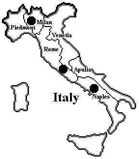

Editor's note:
Back in the S2002M issue, Baron Powell began a series of articles in these pages to introduce his 1900 variant. He started with a general introduction to 1900 and a discussion of Switzerland, which in 1900 is a neutral supply center.In subsequent issues, Baron went on to discuss the roles of Austria-Hungary, Britain, France, and Germany in 1900. These articles came to form the basis for the Gamer's Guide to 1900, which was later placed directly in the Diplomacy Archive. However, while other articles on 1900 have been published in the Zine since then, the Gamer's Guide articles on the other three Great Powers never have been. We here at the Pouch hate to leave things incomplete: so now, five years later, we're finishing the series!
In the following article on Italy in 1900 Baron summarizes his approach to the country, and the steps he took to bring it up from the bottom of the heap in standard Diplomacy to make it a Power to be reckoned with in 1900. Whether you play 1900 or just appreciate his observations about Italy in the standard game, we're sure you'll find it instructive!

Italy received much of my attention while I worked on 1900. This is because I believed Italy needed help. Let’s face it, Diplomacy’s Italy requires a transfusion.
How bad are things? In a face-to-face game, the person who draws Italy receives condolences from the other players before the game even starts. Tournaments are designed so players won’t be "burdened" with Italy in more than one game. Player rating systems that don’t weigh a win or a draw by the Pope higher than a similar accomplishment by the President or Tsar are called into question. I don’t know about you, but these things concern me. I think the game of Diplomacy suffers if, as seems to be the case, a universal perception exists that some Great Powers are inherently stronger or weaker than others. After all, who wants to be saddled with some 'red-headed step-child' of a country?
Unfortunately, all indications are that Italy’s poor reputation is very much deserved. Italy’s overall record is nothing short of horrendous.
Consider:
As I’ve said before, Italy appears to be the ’62 Mets of Diplomacy.
This is not to say that Italy’s terrible performance doesn’t reflect actual history quite well. D. J. Goodspeed in The German Wars: 1914-1945 quotes Bismarck as saying that Italy "had a large appetite but very poor teeth." Goodspeed further remarks that "Italy since her creation in 1861 had shown herself incompetent on every battlefield." Italy’s pretensions to Great Power status were not helped when it suffered the humiliation of being the only European nation to lose a war to an African nation, Abyssinia, in 1889. Yikes! Even Turkey, the supposed "Sick Man of Europe," was holding its own against the Italians in 1911 until events in the Balkans forced the Turks to give up the fight in Libya and focus on matters closer to home. Italy’s 'victory' in the Italo-Turkish War left its finances in desperate shape and its military in shambles. Frankly, from a purely historical perspective, it’s hard, if not impossible, to justify Italy being the equal of the other Great Powers.
Good history, though, does not necessarily translate into a good game. If Italy (and Turkey) were as weak in Diplomacy as they were historically, the game would simply not be as appealing. Allan Calhamer recognized this fact when he designed Diplomacy. To give Italy a chance to compete, Allan made Tunis a neutral Supply Center (SC) when, in fact, it clearly belonged to France at the turn of the century. Even this historical liberty seems insufficient, however. This leads us to the following questions: why is Italy’s performance so bad when compared to the other Great Powers and what, if anything, can be done to balance things out without completely twisting historical reality?
The first problem that jumps out at most people is that Italy’s SC in Venice is directly adjacent to Austria- Hungary’s SC in Trieste. No where else on the map does such a situation exist. Having SCs that touch can’t help but create tension between the two neighbors since each has to worry about the other opening the game with an attack. I think Austria-Hungary has much more to fear in this regard, but the problem does work both ways, particularly as the game progresses. Each Great Power is almost forced to have one unit pull garrison duty close to home to preclude the possibility of the other building in the Winter and attacking in the Spring without warning.
There is no doubt in my mind that this situation is annoying for both the Archduke and Pope, and contributes in some measure to each Great Power’s poor record. Still, I don’t believe the Venice/Trieste issue is a fatal flaw. Instead, I think Italy’s woes stem directly from the basic dynamics of the game. This position takes some explaining.
It’s generally accepted that Italy’s growth potential is limited, but why this is so is seldom addressed. It’s easy to say Italy’s generally poor growth is due to a paucity of surrounding neutral SCs. Tunis is a given, but after that, Italy must bump heads with its neighbors to get additional SCs. This means that Italy will normally get only one build in ’01. The lack of surrounding neutral SCs is not a sufficient explanation, however, since this situation is not unique to Italy. England and Turkey both commonly enter ’02 with only four units. There is a key difference, though, between Italy’s situation and that of England or Turkey, or any other Great Power for that matter: Italy is not part of either the eastern (A/R/T) or western (E/F/G) triangles.
A common pattern in Diplomacy is that the three Great Powers on each side of the board sort themselves out so that two form a dual alliance and fight the remaining one. While it’s true there is some cross over between the eastern and western triangles, generally in the north involving Russia on one side and England and/or Germany on the other, and triple alliances can alter the dynamics somewhat, this basic "2:1 Rule" is fundamental to Diplomacy. The "odd Power out" (hereafter OPO) in each triangle is usually in deep trouble and its home SCs and traditional neutrals often end up in the hands of the two allies. The conquerors thus have new units that can be used to fuel further expansion on the other side of the board. Italy is not a member of either triangle. This is not entirely a bad thing. Italy has to worry less about a game-start attack than the other Great Powers do and Italy invariably will have many suitors. In particular, the OPOs in the east and west will almost certainly appeal to Italy for help. Being "above the fray" is not always a good thing, though. With only four units on hand at the start of ’02, Italy lacks the muscle to get actively involved in both the eastern and western triangles right away. Generally, the Pope will have to choose one or the other. If, after making his east-west decision, the Pope sides with the OPO, the resulting 2-vs-2 situation often becomes stalemated. Italy’s growth, if any, is likely to be extremely limited. In the meantime, the dual alliance in the other triangle will be looking for new worlds to conquer after finishing off the OPO. Unfortunately for Italy, it lies directly in the path of any Great Power that is expanding in the Mediterranean. All too often, Italy is hit in the rear while its forces are tied up on another front.
The scenario described above might lead one to conclude that Italy’s best option is to join in a triple alliance with the two partners in one of the dual alliances or, if the Pope is the devious type, to form one or two dual alliances within the triple. With three Great Powers lined up against it, the OPO will likely go down quickly. Its demise will presumably allow Italy to pick up some SCs. Further, a new triangle is created and the "2:1 Rule" comes into effect. With good diplomacy, the Pope can ensure Italy is not the new OPO.
While this arrangement sounds promising, there are some problems. For one thing, as one of three, Italy’s share of the spoils when the OPO is destroyed is going to be small. This means Italy may still be smaller than the Great Power racing at it when the victorious dual alliance in the other triangle moves out of its side of the map. More importantly, Italy is not always well positioned to participate in a triple alliance. Of the six triple alliances involving the three Great Powers in one triangle and Italy (i.e., no cross-triangle triple alliances such as E/I/R), only three seem to offer real opportunities for sustained Italian growth: E/G/I versus France, A/I/R versus Turkey, and I/R/T versus Austria-Hungary. E/G/I and A/I/R appear to give Italy its best prospects. In the case of I/R/T, the Pope is playing with fire. Unless he is very confident that either the Tsar or the Sultan will be his friend after the Archduke is disposed of, feeding the Dual Monarchy to the Juggernaut may be tantamount to suicide. Also, if the friend turns out to be the Sultan, the Pope will be living on the edge for as long as the I/T alliance lasts.
Well, this is a pretty bleak picture. What has been done in 1900 to fix it? I’m glad you asked.
First, Italy itself has undergone a significant transformation. Venice is no longer a SC. Instead, it is simply a buffer space that is now called Venetia. The SC reappears in a new Italian space in the north called Milan. These changes work to eliminate the inherent friction that exists between Austria-Hungary and Italy in Diplomacy over Venice/Trieste. Also, Tuscany is no more. Its removal means that Rome touches Milan, Piedmont, and Gulf of Lyon directly. This has tremendous implications for Italy both offensively and defensively as will be discussed shortly.
Next, we see that things around Italy have also changed.
Switzerland, impassable in Diplomacy, is now a neutral SC. Because Switzerland borders three Great Power home SCs, Marseilles, Milan, and Munich, its occupation by any one Great Power is likely to be viewed with trepidation, if not outright hostility, by the other two Great Powers. Given that both France and Germany have other neutral SCs nearby they can claim, I imagine most Popes will regard Switzerland as falling within Italy’s sphere of influence, a position I whole-heartedly support. While the President and Kaiser might agree that Italian possession of Switzerland is the "fair" thing, neither is likely to view Italian occupation of Switzerland with much enthusiasm unless they are confident that Italy is friendly.
To the southwest, the boundaries of the Tyrrhenian Sea have been drawn so that it touches the new French SC, Algeria, in Africa. (NOTE: The Tyrrhenian Sea in Diplomacy does not touch the North Africa space.) This change was made to facilitate Italian operations against French possessions in Africa in the event the two Great Powers come to blows. It should be mentioned that France has a new army in Algeria at game-start.
Moving east along the coast of Africa, we see that Tunis, now Tunisia, is no longer a neutral SC. Instead, it is a buffer space under French control at game-start. Having Tunisia as a buffer means that France and Italy each have an equal chance of occupying Tripolitania in ’00 if they both go for it. Tripolitania is a new neutral SC on the far side of the Ionian Sea from the Italian mainland. Immediately to Tripolitania’s east is another buffer space, Cyrenaica. Cyrenaica separates Tripolitania from Egypt. Egypt is a British SC and is occupied by a British fleet at game-start. This means the Prime Minister can also make a move for Tripolitania and, if he does, his odds of getting it in ’00 are as good as the Pope’s. What gives Italy an advantage in the quest for Tripolitania is that France’s A Algeria and Britain’s F Egypt might be needed elsewhere while Italy’s F Naples will almost certainly open to the Ionian Sea.
In addition to Egypt in the eastern Mediterranean, Britain also controls Gibraltar in the west. Unlike Egypt, Gibraltar is not a British SC, but a British fleet does begin the game there. Besides the obvious fact that Britain is a major player in the Mediterranean because of its possessions and fleets, the Pope should also note that Gibraltar makes it more difficult for France to reinforce its southern flank. This is because Gibraltar divides Spain’s southern coast into two separate coasts, east and west. In conventional Diplomacy, French fleets built in Brest can progress quickly to the Mediterranean by moving from Brest to the Mid-Atlantic Ocean in the Spring followed by a move to Spain(sc) in the Fall. In just two turns, a French fleet built in Brest is in position to support Marseilles or enter Gulf of Lyon. Now, a newly built French fleet has to go from Brest to Mid-Atlantic Ocean to Gibraltar to Spain(ec)/Western Mediterranean or Brest to Mid-Atlantic Ocean to Morocco to Western Mediterranean. In either case, the going is slower. Given Italy’s ability to quickly reinforce its position in the Mediterranean and the relative ease with which Italy can prevent France from building in Marseilles, the Pope can make things quite uncomfortable for France in the south.
Looking to the east, we see that Albania, which didn’t come into existence until 1912, is replaced by a new Turkish space, Macedonia, that stretches from the Adriatic Sea to Constantinople. This Macedonian space creates a situation where the Ottoman Empire, not the Dual Monarchy, is likely to take Greece in ’00. Turkish options will be addressed in the forthcoming article on Turkey, but the point to be made here is that it’s possible that Turkey will get two builds (maybe three!) in ’00. Most Popes will not greet such prospects with great joy. While Italy can stop the Sultan from taking Greece in ’00, the price for doing so, besides certain Turkish animosity, is an Italian build because Italy cannot block Turkish growth and claim Tripolitania at the same time.
While on the subject of Turkey, I should point out that the Turkish SC that was in Smyrna, now Konya, has moved to Syria, now Damascus. The full impacts of these changes will be discussed in detail when I look at Turkey, but I will say that the impetus behind them was to help Italy (and Austria-Hungary) by curbing Turkish power in a small way and by facilitating the formation of anti-Turk alliances, specifically A/R and B/I.
Finishing our tour around Italy, we note that Austria-Hungary has an army in Trieste at game-start instead of a fleet. This technically allows the Dual Monarchy to send units to Tyrolia and Venetia in Spring ’00 while still taking Serbia. Such an opening will almost certainly cause the Pope to start repeating rosaries. Fortunately for Italy, such audacious moves are unlikely for Austria-Hungary unless its relations with both Germany and Russia are exceptionally good. Still, the Pope should not take for granted the fact that the Archduke will use his third army in the east.
So what are the cumulative effects of all these changes? A few people have expressed the opinion that the changes actually make Italy’s plight worse! For example, comments that appeared in Scott Morris’s ‘zine The Flat Earth Society when 1900 was introduced included the following:
Oh my! Such damning remarks! It’s a good thing I’m not easily discouraged. In my opinion, Italy is better off for the following reasons:
A few people have told me that the map changes in and around Italy, particularly the opening up of Switzerland and elimination of Tuscany, mean that a game-start war with France is inevitable. I won’t deny that the Pope and President have gone to war in the overwhelming majority of 1900 games played as of this writing. This is no doubt the result of several changes I implemented. Italy’s "natural" orientation is now westward, not eastward. This is by design. I wanted to curb French power and to avoid making it easy for the Pope to hit the Dual Monarchy at game-start. I also did things to improve Italy’s prospects against France such as curbing French naval power in the Mediterranean. This Franco-Italian friction is good history by the way. Italy entered into the Triple Alliance with Germany and Austria-Hungary, even though most Italians detested the Austrians, because France inspired intense fear and hatred.
Certainly, the Pope can make life absolutely miserable for the President. A successful opening of A Milan to Switzerland and A Rome to Piedmont gives Italy possession of Switzerland and puts two units on Marseilles in ’00. If the Pope suspects France will move A Marseilles to Piedmont or Switzerland in the Spring, he can open A Rome to Piedmont supported by A Milan and give himself an excellent chance of taking Switzerland while protecting Italy proper. Meanwhile, F Naples opens to Ionian Sea where it can try for Tripolitania or Greece in the Fall depending on which neutral is most likely to be open. If Italy captures even one neutral SC in ‘00, it can build F Rome and really turn the heat on France. If Italy captures two neutral SCs in ’00, F Rome and F Naples are sure to give Italy dominance in the Western Mediterranean. In all likelihood, either Britain or Germany, and possibly both, will be quite happy to see Italy decisively engaged with France and will render aide.
Sending the two Italian armies north to do battle with France over Switzerland is certainly a viable option and has been quite popular with Popes. However, as tempting as it might be to plunge into southern France and show the President he isn’t so big and bad anymore, the sad truth is that this could result in Italy being caught in a deadly quagmire. If either Britain or Germany sides with France, an easy Italian conquest of the Third Republic is probably out of the question. In fact, stalemate and lack of growth is much more likely. Should Italy get caught in a two-on-two western slugfest, it is probably only a matter of time before the Dual Monarchy or the Ottoman Empire hits it in the rear and takes it out of its misery.
Of course, I don’t think a Franco-Italian War is inevitable, just as it wasn’t in 1914. The tense Trieste/ Venice situation in Diplomacy certainly doesn’t mean that an Austro-Italian War is a sure thing in ‘01. On the contrary, an A/I in Diplomacy can be very strong. Despite the seeming obstacles, I happen to believe a F/I in 1900 has much to offer each partner. The two allies each get a secure flank, they can expand without stepping on each other’s toes, and they can cooperate directly in the center of the map.
In my mind, any Italian accommodation with France would have to involve the President’s acceptance of Italy’s "just claim" to Switzerland and possible support into the SC. In return, the Pope would probably have to agree to send A Rome south, the traditional Italian opening in Diplomacy, instead of north. Why would the President agree to allow an Italian army next to Marseilles? Well, when your neighbors are the British leviathan and the German behemoth, you really shouldn’t be looking to make enemies. Even if one of the two is a French ally, the other will probably be a big enough challenge to take down without the distraction of a hostile Italy complicating things, particularly when Italy is likely to focus primarily on France and leave France’s ally alone. Looking at it from Rome’s perspective, an accommodation with France almost guarantees Italy will get two builds in ’00. A five SC Italy in ’01 will surely get people’s attention. Additionally, Italy can become a major player in the east.
French friendship or neutrality allows Italy to pursue a "traditional" approach. Consider these moves:
From this position, Italy is fairly well situated to take the war to Austria-Hungary, British occupied Egypt, or Turkey while still maintaining a viable presence in the center of the map. This position also allows Italy to fight effectively along side France should the Third Republic be the OPO in the west while still maintaining a respectable defense against an expanding eastern Power. Interestingly, the moves above also appear to facilitate a scenario where France has been hit hard in ’00 and seems likely to collapse quickly. If such a situation occurs, the Pope might be well advised to grab what fragments of the crumbling French Empire he can while negotiating heavily with both the Prime Minister and Kaiser in an attempt to break-up B/G and install either B/I or G/I in its place.
While I think it will be rare, an Italian thrust into Austria-Hungary at game-start is a possibility. The Archduke is likely to start choking on his breakfast pastry if he opens up the Spring ’00 adjudication and sees that Italy has opened with A Milan to Tyrolia and A Rome to Venetia, with the Regia Marina, of course, moving to the Ionian Sea. In most cases, the Dual Monarchy will be able to defend itself, but all of its prior planning will probably end up in the circular file. I say such an aggressive Italian opening will be rare, however, because it implies that relations with France are extremely cozy. France would either take Switzerland itself, something I don’t recommend Popes condone except under exceptional circumstances, or help Italy take it later. If F/I is this tight, though, the Kaiser is sure to notice. As a result, German assistance to the Archduke might be forthcoming. If this occurs, Italy might not benefit much from its attack.
In summary, the differences between Italy in Diplomacy and in 1900 are:
Game results to date suggest that Italy is indeed better off in 1900 than it is in Diplomacy, both in terms of overall play and, more importantly, in its ability to win. Italy regularly gets out of the blocks faster than its counterpart in Diplomacy, and an Italian solo in 1900 is hardly a shock like it is in Diplomacy.
There is a downside, though. The trade off for Italy’s enhanced potential for success appears to be that its
potential for disaster has also increased. While Diplomacy’s Italy is doomed to be kingmaker, but seldom
king, it at least has staying power. In the 1900 games concluded as of this writing, Italy has been
eliminated more often than any Power except France. However, if given a choice between survival on the
one hand or a legitimate chance of winning on the other, even if the risk of being eliminated increases, my
guess is that most Popes will choose the latter. If I’m correct in this regard, I’m sure most players will
agree that Italy has taken a huge step forward in this variant.
 |
B.M. Powell (VonPowell@aol.com) |
If you wish to e-mail feedback on this article to the author, and clicking on the envelope above does not work for you, feel free to use the "Dear DP..." mail interface.